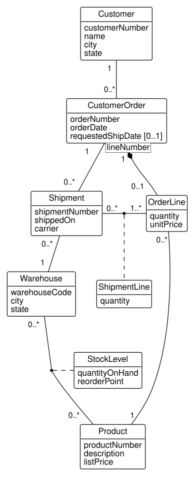
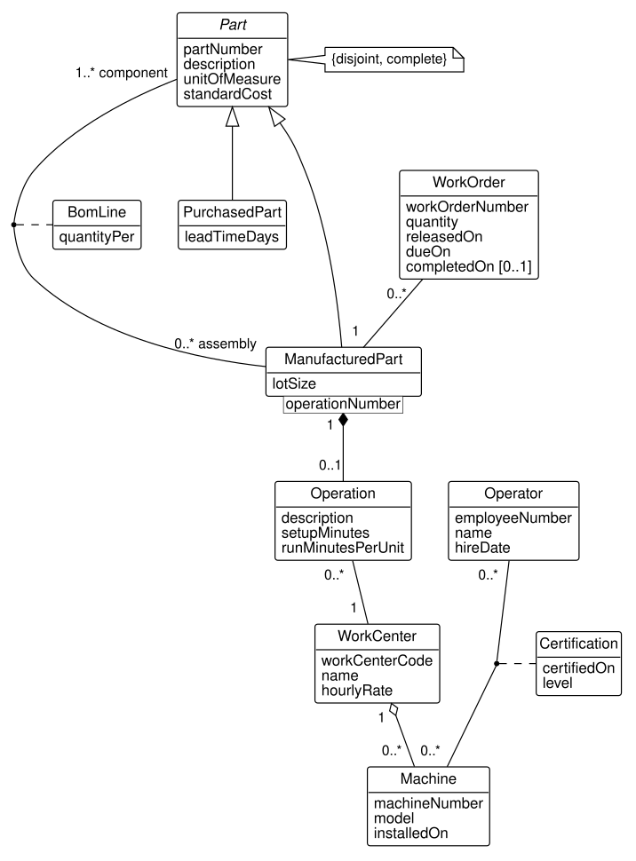
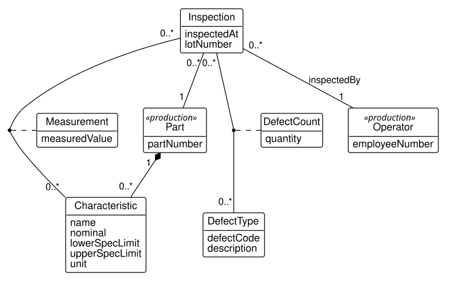

Appendix C — The Book’s Databases
The examples and exercises in this book use one database, built for the book. It records the business of HG Industries, a small manufacturer of hand trucks and garden carts, as its distribution, production, and quality departments see it. The chapters introduce the database a few tables at a time, as each new idea needs them. This appendix shows it whole: what it contains, how to load it, how its tables and columns are named, and what each table holds.
C.1 HG Industries
HG Industries makes four products: two hand trucks and two garden carts. It sells them to hardware stores, farm stores, and distributors from two warehouses, one at the plant in Fayetteville, Arkansas, and one in Tulsa, Oklahoma. The products are simple enough to picture and still have the structure of real manufactured goods. For example, both hand trucks and both carts roll on the same wheel assembly, which is itself built from purchased tires, rims, and bearings and from an axle the plant machines from bar stock.
Each department keeps its own data, and each department’s data is a separate schema, a named group of tables within one database. Table C.1 lists them. The sales schema is not a department’s working data. It is built from the other schemas for analysis, and Chapter 11 explains why a company keeps its data twice in this way.
| Schema | What it records | Tables |
|---|---|---|
distribution |
Customers, their orders, the products ordered, stock in the warehouses, and shipments | 8 |
production |
Parts, bills of materials, work centers and their machines, operators and their certifications, routings, and work orders | 10 |
quality |
Characteristics of parts with their specification limits, inspections, measurements, and defects found | 5 |
sales |
A star schema for analyzing sales, built from distribution and production |
4 |
The schemas refer to one another where the business connects. A product that distribution sells is one of the parts production makes, and an inspection in quality examines one of production’s parts and is performed by one of production’s operators. Thus, a query can join tables across departments, as the company’s own reports must.
C.2 Loading the database
The database is built by SQL scripts that come with the book, in the sql folder of the companion code project (https://github.com/rossetti/DbConceptsBookCode) and as downloads from the book’s site. Appendix A explains how to install PostgreSQL and connect to it with DataGrip or DBeaver. You then create an empty database once; the book calls it dbconcepts.
The scripts build the database in stages, each adding one idea’s tables and rows to the stages before it. Table C.2 lists them in the order they load. The chapters say which stage their examples assume. For example, the single-table queries of Chapter 3 need only stage D1, while the analytical queries of Chapter 4 need the year of history in stage G.
| Stage | Adds | The new idea |
|---|---|---|
| D1 | customer |
One table: rows, columns, and a key |
| D2 | customer_order |
A one-to-many association and its foreign key |
| D3 | product, order_line |
A many-to-many association resolved by a table with its own data |
| D4 | warehouse, stock_level |
A second association class |
| D5 | shipment, shipment_line |
Optional participation |
| P1 | part, manufactured_part, purchased_part |
Generalization; connecting distribution to production |
| P2 | bom_line |
A recursive association, the bill of materials |
| P3 | work_center, machine, operator, certification, operation, work_order |
Qualified associations and aggregation |
| Q | the quality schema |
Measurements over time |
| G | a year of history | Enough data to analyze |
| S | the sales schema |
A star schema |
Each load file, in the sql/load folder, is named for its stage (through-d1.sql, through-d2.sql, and so on to through-s.sql) and rebuilds the database as it stands at that stage. It first deletes the four schemas of Table C.1, then runs every stage script up to its own. Thus, you can run a load file at any time to return the database to a known state, and one file is all you ever need to open. A load file touches no schema other than these four.
In DataGrip or DBeaver, open the load file, choose the dbconcepts connection, and run the whole script. From a terminal, psql does the same:
psql -d dbconcepts -f sql/load/through-s.sqlThe stage scripts themselves are in sql/distribution, sql/production, sql/quality, sql/history, and sql/sales, one file per stage. They are worth reading, since each is a short, complete example of defining and populating tables. Run them only through a load file, though. Each assumes the stages before it were loaded into a freshly reset database, because its rows refer to earlier rows by their key numbers.
C.3 Naming and keys
Every table follows the same rules, and knowing them makes any table readable at a glance. Chapter 2 and Chapter 6 explain the reasoning behind them.
- Table names are singular nouns in lower case with underscores (
customer,order_line), like the class each table implements. No table or column is named with a word reserved in the SQL standard. That is why an order is acustomer_order(ORDERis reserved) and a date column isfull_daterather thandate. - Primary keys are named for their table with the suffix
_pk(customer.customer_pk). They are surrogate keys: integers that PostgreSQL generates, which carry no business meaning. - Business identifiers, the numbers people use (
customer_number,part_number,order_number), are separate columns declaredUNIQUE. Where a row is identified by two columns together, such as an order line by its order and its line number, the pair is declaredUNIQUE. - Foreign keys are named for the table they refer to with the suffix
_fk(customer_order.customer_fk). Where the table’s name would not say what a reference means, the column is named for its role: a bill of materials line has anassembly_fk, referring tomanufactured_part, and acomponent_fk, referring topart, and a sales fact has anorder_date_fk.
C.4 The distribution schema
Figure C.1 shows the class model of the distribution schema. A customer places orders, and each order is made of order lines, numbered within the order, that name a product and a quantity. Notice that the order line is drawn with a qualifier, lineNumber: an order and a line number together identify at most one line. The stock of each product in each warehouse is an association class, StockLevel, because a quantity on hand belongs to neither the warehouse nor the product alone. An order may have any number of shipments, including none, and each shipment line ships some quantity of one order line.

Table C.3 lists the tables that implement the model. The foreign key from product to production.manufactured_part is added in stage P1, when the production schema exists to refer to.
| Table | Columns, in order, and their keys |
|---|---|
customer |
customer_pk (primary key), customer_number (unique), name, city, state |
customer_order |
customer_order_pk (primary key), order_number (unique), order_date, requested_ship_date (optional), customer_fk (refers to customer) |
product |
product_pk (primary key), product_number (unique), description, list_price, manufactured_part_fk (refers to production.manufactured_part) |
order_line |
order_line_pk (primary key), customer_order_fk (refers to customer_order), line_number, product_fk (refers to product), quantity, unit_price; (customer_order_fk, line_number) is unique |
warehouse |
warehouse_pk (primary key), warehouse_code (unique), city, state |
stock_level |
stock_level_pk (primary key), warehouse_fk (refers to warehouse), product_fk (refers to product), quantity_on_hand, reorder_point; (warehouse_fk, product_fk) is unique |
shipment |
shipment_pk (primary key), shipment_number (unique), shipped_on, carrier, customer_order_fk (refers to customer_order), warehouse_fk (refers to warehouse) |
shipment_line |
shipment_line_pk (primary key), shipment_fk (refers to shipment), order_line_fk (refers to order_line), quantity; (shipment_fk, order_line_fk) is unique |
The base data (stages D1 to D5) covers January through March 2026 and is small enough to print whole. It was written to contain the situations the chapters’ queries must handle:
- One customer, C-1008 Northgate Hardware, has never ordered, and one product, the GC-400 poly garden cart, has never been ordered.
- Two orders have no requested ship date, so the column holds NULL.
- Order SO-5004 lists the HT-100 on two lines at two prices, which is why an order line is a class of its own rather than a simple pairing of an order and a product (Chapter 5).
- Order SO-5004 shipped in two shipments. Three order lines shipped only in part, leaving backorders, and orders SO-5011 and SO-5012 have not shipped at all.
- Two stock levels are below their reorder points, and the GC-400 in Tulsa has none on hand.
C.5 The production schema
Figure C.2 shows the class model of the production schema. Every part is either purchased or manufactured, never both, and there is no third kind; the generalization is {disjoint, complete}. A manufactured part is an assembly of components through the bill of materials, where the quantity of each component per assembly is the association class BomLine. Notice that a component may itself be an assembly, which makes the association recursive. Each manufactured part has a routing: operations numbered within the part, each performed at a work center. Work centers aggregate machines, operators hold certifications on machines, and work orders release a quantity of a manufactured part to the plant floor.

Table C.4 lists the tables. Notice that manufactured_part and purchased_part have no surrogate key of their own: each row’s primary key, part_fk, is also its reference to the part it is.
| Table | Columns, in order, and their keys |
|---|---|
part |
part_pk (primary key), part_number (unique), description, unit_of_measure, standard_cost |
manufactured_part |
part_fk (primary key, refers to part), lot_size |
purchased_part |
part_fk (primary key, refers to part), lead_time_days |
bom_line |
bom_line_pk (primary key), assembly_fk (refers to manufactured_part), component_fk (refers to part), quantity_per; (assembly_fk, component_fk) is unique |
work_center |
work_center_pk (primary key), work_center_code (unique), name, hourly_rate |
machine |
machine_pk (primary key), machine_number (unique), model, installed_on, work_center_fk (refers to work_center) |
operator |
operator_pk (primary key), employee_number (unique), name, hire_date |
certification |
certification_pk (primary key), operator_fk (refers to operator), machine_fk (refers to machine), certified_on, level; (operator_fk, machine_fk) is unique |
operation |
operation_pk (primary key), manufactured_part_fk (refers to manufactured_part), operation_number, description, setup_minutes, run_minutes_per_unit, work_center_fk (refers to work_center); (manufactured_part_fk, operation_number) is unique |
work_order |
work_order_pk (primary key), work_order_number (unique), manufactured_part_fk (refers to manufactured_part), quantity, released_on, due_on, completed_on (optional) |
The eighteen parts form a bill of materials up to four levels deep. The HT-100 hand truck contains the WA-10 wheel assembly, which contains the AX-10 axle, which is machined from BS-075 bar stock. The wheel assembly is used in all four products. Tubing and bar stock are bought by the foot, so a quantity per assembly can be a fraction: 1.25 feet of bar stock for each axle. In addition, the data holds:
- a work center, Assembly, with no machines;
- a machine, the M-07 robotic welder, on which no one is certified yet;
- an operator, Tom Becker, hired in January 2026, with no certification;
- ten work orders, of which three are still open (no completion date) and two finished after their due dates.
C.6 The quality schema
Figure C.3 shows the class model of the quality schema. Each characteristic, such as an axle’s diameter, belongs to a part and carries its nominal value and specification limits. An inspection examines a lot of one part, is performed by one of production’s operators, and records a measurement of each of the part’s characteristics and a count of each kind of defect it finds. Measurements and defect counts are both association classes.

| Table | Columns, in order, and their keys |
|---|---|
characteristic |
characteristic_pk (primary key), part_fk (refers to production.part), name, nominal, lower_spec_limit (optional), upper_spec_limit (optional), unit; (part_fk, name) is unique |
defect_type |
defect_type_pk (primary key), defect_code (unique), description |
inspection |
inspection_pk (primary key), part_fk (refers to production.part), operator_fk (refers to production.operator), inspected_at, lot_number |
measurement |
measurement_pk (primary key), inspection_fk (refers to inspection), characteristic_fk (refers to characteristic), measured_value; (inspection_fk, characteristic_fk) is unique |
defect_count |
defect_count_pk (primary key), inspection_fk (refers to inspection), defect_type_fk (refers to defect_type), quantity; (inspection_fk, defect_type_fk) is unique |
The base data holds twenty inspections of axles, hand truck frames, and cart frames in January and February 2026. Weld strength has a lower specification limit and no upper one, since a stronger weld is never a defect, so its upper limit is NULL. The data was built to show:
- an axle diameter that rises at every inspection and ends above its upper specification limit;
- five measurements outside their specification limits in all;
- one inspector, Linda Nguyen, whose coating thickness readings run consistently lower than Robert Hayes’s readings of the same parts;
- paint runs outnumbering every other defect combined, and one defect type, cracks, that has never been found.
C.7 The year of history
The base data is small by design, and some questions need more. Stage G adds a year of business to the distribution and quality schemas:
- 22 more customers, for 30 in all, in Arkansas, Oklahoma, Missouri, Kansas, and Texas;
- 602 orders from April 2026 through March 2027, with 1,043 order lines, 641 shipments, and 1,078 shipment lines;
- 236 inspections from April through September 2026, with 419 measurements and 101 defect counts.
The history follows patterns that the analytical chapters look for. Garden carts sell mainly in the spring: the GC-300 sells 1.75 times as many units from April to June as from October to December. Hand trucks rise toward the end of the year. The GC-400 is sold from its launch on 1 September 2026, and large customers and large order lines receive discounts. On the plant floor, the axle diameter creeps upward as the lathe’s cutting tool wears and drops back at each of five tool changes.
The history was generated by a program, GenerateHistory, in the companion code project, which draws its random choices from seeded random number streams of the KSL. Thus, the program writes the same history on every run, and every reader’s queries return the same results. Chapter 10 discusses programs that work with databases in this way.
C.8 The sales star schema
Stage S builds the sales schema of Figure C.4, a star schema for analyzing sales. The fact table, order_line_fact, has one row for every order line. Its measures (quantity, sales, discount from list price, and standard cost) can be added up along any of the three dimensions around it: the date of the order, the customer, and the product. The dimensions carry attributes the operational tables do not, such as each customer’s sales region and each product’s product line.

Notice that the diagram shows the tables’ key columns, unlike the class models above. A star schema is a design for tables, not a model of the business, and Chapter 11 develops it at that level.
| Table | Columns, in order, and their keys |
|---|---|
date_dim |
date_dim_pk (primary key), full_date (unique), calendar_year, calendar_quarter, calendar_month, month_name, day_of_month, day_of_week, day_name, is_weekend |
customer_dim |
customer_dim_pk (primary key), customer_number (unique), name, city, state, sales_region |
product_dim |
product_dim_pk (primary key), product_number (unique), description, product_line, list_price, standard_cost |
order_line_fact |
order_line_fact_pk (primary key), order_date_fk (refers to date_dim), customer_dim_fk (refers to customer_dim), product_dim_fk (refers to product_dim), order_number, line_number, quantity, sales_amount, discount_amount, cost_amount; (order_number, line_number) is unique |
The stage S script is itself an extract, transform, and load process written in SQL. It reads the distribution and production schemas, derives the new attributes, and loads the fact table by looking up each dimension’s key from the business identifiers. Chapter 11 walks through it.
C.9 Rows in each table
Table C.7 gives the number of rows in each table at the two sizes the book uses. Notice that the base data, through stage Q, keeps every table small enough to print, while the history adds its volume to five of the distribution tables and three of the quality tables. The production tables are the same at both sizes.
| Table | Base data (through stage Q) | With the history (through stage S) |
|---|---|---|
distribution.customer |
8 | 30 |
distribution.customer_order |
12 | 614 |
distribution.product |
4 | 4 |
distribution.order_line |
22 | 1065 |
distribution.warehouse |
2 | 2 |
distribution.stock_level |
8 | 8 |
distribution.shipment |
11 | 652 |
distribution.shipment_line |
18 | 1096 |
production.part |
18 | 18 |
production.manufactured_part |
8 | 8 |
production.purchased_part |
10 | 10 |
production.bom_line |
23 | 23 |
production.work_center |
5 | 5 |
production.machine |
7 | 7 |
production.operator |
6 | 6 |
production.certification |
10 | 10 |
production.operation |
13 | 13 |
production.work_order |
10 | 10 |
quality.characteristic |
5 | 5 |
quality.defect_type |
6 | 6 |
quality.inspection |
20 | 256 |
quality.measurement |
34 | 453 |
quality.defect_count |
15 | 116 |
sales.date_dim |
730 | |
sales.customer_dim |
30 | |
sales.product_dim |
4 | |
sales.order_line_fact |
1065 |
C.10 Millbrook Transit
A second, smaller database gives the query exercises of chapters 3 and 4 a setting outside HG Industries. It records one week of service, Monday 2 March to Sunday 8 March 2026, of Millbrook Transit, a fictional town’s bus agency. Its design is adapted from the class model of the transit exercises of chapter 5, which come from a Transportation Research Board study of transit monitoring (Rossetti 1999), and mapped to tables as chapter 6 teaches. It differs from the exercises’ model in a few places. Every person has a rider category. An account has an opening date and no balance. A smart card names the person who carries it (person_fk, NULL for an anonymous card), an association the model does not have. A trip refers to the point traversals where it boarded and alighted, not to an origin and a destination point, and records no times of its own. A driver has an employee number and a hire date, not a license number. An assignment has no comments. A route traversal refers to an assignment, not to a vehicle and a route; the assignment names both. A schedule adds the times of its first and last departures (first_departure, last_departure), and a schedule line holds the minutes after the bus’s departure, not an arrival and a departure time. An access point’s block location may also be off street. Finally, the database has no tables for authorizations, points of interest, or link traversals.
The agency runs three loop routes, each starting and ending at the Transit Center: the Plant Loop (route 1), the Campus Loop (route 2), and the Hospital Loop (route 3). Buses leave every 30 minutes on weekdays, from 6:00 to 19:30, and every hour on Saturday, from 8:00 to 17:00; there is no service on Sunday. The tables fall into four groups.
- The network.
route,point, andsegment: each route is its ordered segments, each segment joining a start point to an end point. Points are specialized intoaccess_point, where passengers board and alight, andscheduled_point, which appears on the timetables, mapped to a table for each class (Section 6.5.1). - Schedules.
schedule, with its days (schedule_day,day_of_week) and its lines (schedule_line), each giving the minutes from departure to a scheduled point. - Operations.
vehicle,driver, andassignment, which puts a driver on a vehicle on a route for a shift;route_traversal, one run of a route under an assignment; andpoint_traversal, each point the bus reached on a run, with the passengers boarding and alighting there. - Riders.
person,mailing_address,account,smart_card,trip, andpayment. Smart cards are debit or credit cards, a generalization mapped to one table withcard_kind(Section 6.5.3). Each trip made with a card refers to the point traversals where it boarded and alighted. Riders who pay cash are counted in the boardings and alightings but recorded as no trip.
Listing C.1 gives the tables in the notation of Section 2.4.
route (route_pk, route_number, name, color, distance_miles)
primary key: route_pk
alternate key: route_number
point (point_pk, point_code, name, latitude, longitude)
primary key: point_pk
alternate key: point_code
access_point (point_fk, block_location, waiting_capacity,
bench_count, shelter)
primary key: point_fk
point_fk references point_pk in point, must not be NULL
scheduled_point (access_point_fk, timetable_posted)
primary key: access_point_fk
access_point_fk references point_fk in access_point,
must not be NULL
segment (segment_pk, route_fk, sequence_number,
start_point_fk, end_point_fk, length_miles)
primary key: segment_pk
alternate key: (route_fk, sequence_number)
route_fk references route_pk in route, must not be NULL
start_point_fk references point_pk in point,
must not be NULL
end_point_fk references point_pk in point,
must not be NULL
day_of_week (day_of_week_pk, day_name, iso_day)
primary key: day_of_week_pk
alternate key: day_name
alternate key: iso_day
schedule (schedule_pk, route_fk, name, first_departure,
last_departure, headway_minutes, last_updated)
primary key: schedule_pk
alternate key: (route_fk, name)
route_fk references route_pk in route, must not be NULL
schedule_day (schedule_day_pk, schedule_fk, day_of_week_fk)
primary key: schedule_day_pk
alternate key: (schedule_fk, day_of_week_fk)
schedule_fk references schedule_pk in schedule,
must not be NULL
day_of_week_fk references day_of_week_pk in day_of_week,
must not be NULL
schedule_line (schedule_line_pk, schedule_fk, line_number,
scheduled_point_fk, minutes_after_departure)
primary key: schedule_line_pk
alternate key: (schedule_fk, line_number)
schedule_fk references schedule_pk in schedule,
must not be NULL
scheduled_point_fk references access_point_fk in
scheduled_point, must not be NULL
vehicle (vehicle_pk, vehicle_number, model_year,
seating_capacity)
primary key: vehicle_pk
alternate key: vehicle_number
driver (driver_pk, employee_number, name, hired_on)
primary key: driver_pk
alternate key: employee_number
assignment (assignment_pk, route_fk, vehicle_fk, driver_fk,
starts_at, ends_at)
primary key: assignment_pk
route_fk references route_pk in route, must not be NULL
vehicle_fk references vehicle_pk in vehicle,
must not be NULL
driver_fk references driver_pk in driver,
must not be NULL
route_traversal (route_traversal_pk, assignment_fk,
started_at, ended_at)
primary key: route_traversal_pk
alternate key: (assignment_fk, started_at)
assignment_fk references assignment_pk in assignment,
must not be NULL
point_traversal (point_traversal_pk, route_traversal_fk,
sequence_number, point_fk, arrived_at,
departed_at, boardings, alightings)
primary key: point_traversal_pk
alternate key: (route_traversal_fk, sequence_number)
route_traversal_fk references route_traversal_pk in
route_traversal, must not be NULL
point_fk references point_pk in point, must not be NULL
mailing_address (mailing_address_pk, street, city, state,
zip_code)
primary key: mailing_address_pk
person (person_pk, name, rider_category, mailing_address_fk)
primary key: person_pk
mailing_address_fk references mailing_address_pk in
mailing_address, may be NULL
account (account_pk, account_number, holder_fk, opened_on)
primary key: account_pk
alternate key: account_number
holder_fk references person_pk in person,
must not be NULL
smart_card (smart_card_pk, card_number, issued_on,
card_kind, balance, account_fk, person_fk)
primary key: smart_card_pk
alternate key: card_number
account_fk references account_pk in account, may be NULL
person_fk references person_pk in person, may be NULL
trip (trip_pk, smart_card_fk, boarding_fk, alighting_fk,
fare)
primary key: trip_pk
smart_card_fk references smart_card_pk in smart_card,
must not be NULL
boarding_fk references point_traversal_pk in
point_traversal, must not be NULL
alighting_fk references point_traversal_pk in
point_traversal, must not be NULL
payment (payment_pk, account_fk, paid_on, amount,
payment_type)
primary key: payment_pk
account_fk references account_pk in account,
must not be NULLThe week holds a few conditions that exercises turn on: bus 105 spends the week in the shop and is never assigned; two people have no smart card, one card is never used, and four cards are anonymous, sold for cash with no person; some people share a mailing address, and some have none; and Sunday has no schedule. The rows in each table, in the order of the four groups, are:
SELECT 'route' AS table_name, COUNT(*) AS row_count
FROM transit.route
UNION ALL
SELECT 'point', COUNT(*) FROM transit.point
UNION ALL
SELECT 'access_point', COUNT(*) FROM transit.access_point
UNION ALL
SELECT 'scheduled_point', COUNT(*)
FROM transit.scheduled_point
UNION ALL
SELECT 'segment', COUNT(*) FROM transit.segment
UNION ALL
SELECT 'day_of_week', COUNT(*) FROM transit.day_of_week
UNION ALL
SELECT 'schedule', COUNT(*) FROM transit.schedule
UNION ALL
SELECT 'schedule_day', COUNT(*) FROM transit.schedule_day
UNION ALL
SELECT 'schedule_line', COUNT(*) FROM transit.schedule_line
UNION ALL
SELECT 'vehicle', COUNT(*) FROM transit.vehicle
UNION ALL
SELECT 'driver', COUNT(*) FROM transit.driver
UNION ALL
SELECT 'assignment', COUNT(*) FROM transit.assignment
UNION ALL
SELECT 'route_traversal', COUNT(*)
FROM transit.route_traversal
UNION ALL
SELECT 'point_traversal', COUNT(*)
FROM transit.point_traversal
UNION ALL
SELECT 'mailing_address', COUNT(*)
FROM transit.mailing_address
UNION ALL
SELECT 'person', COUNT(*) FROM transit.person
UNION ALL
SELECT 'account', COUNT(*) FROM transit.account
UNION ALL
SELECT 'smart_card', COUNT(*) FROM transit.smart_card
UNION ALL
SELECT 'trip', COUNT(*) FROM transit.trip
UNION ALL
SELECT 'payment', COUNT(*) FROM transit.payment;| table_name | row_count |
|---|---|
| route | 3 |
| point | 12 |
| access_point | 10 |
| scheduled_point | 5 |
| segment | 15 |
| day_of_week | 7 |
| schedule | 6 |
| schedule_day | 18 |
| schedule_line | 22 |
| vehicle | 5 |
| driver | 6 |
| assignment | 33 |
| route_traversal | 450 |
| point_traversal | 2700 |
| mailing_address | 24 |
| person | 36 |
| account | 8 |
| smart_card | 40 |
| trip | 339 |
| payment | 5 |
To load the database, create a database named dbconcepts_transit (or use any database of your own) and run two scripts from code/sql/transit/ in order: t-schema.sql, which creates the transit schema and its tables, and t-data.sql, which loads the week. The second is generated by scripts/build-transit-data.py from a seeded random number generator, so it is the same on every machine. Running the first again deletes and recreates the schema.
C.11 Public sample databases for further practice
HG Industries’ data is small so that every result can be checked. For practice at a larger scale, several public sample databases can be loaded into the same PostgreSQL server, each into a database of its own. They are not distributed with the book: Section A.6 explains how to fetch each one from its source, where its license is stated.
Table C.9 lists the four the book’s exercises use. Each is openly licensed; the license travels with the data, not with this book, and you should read it before you reuse the data in work of your own.
| Database | What it records | Source and license | Size |
|---|---|---|---|
| Chinook | A digital music store: artists, albums, tracks, playlists, customers, employees, invoices, 2021 to 2025 | Luis Rocha, lerocha/chinook-database, release 1.4.5; MIT |
11 tables, 0.6 MB |
| Northwind | A food importer: customers, suppliers, products, orders and their lines, employees, shippers | Microsoft’s sample, PostgreSQL port pthom/northwind_psql; Microsoft Public License |
14 tables, 0.3 MB |
| Practical SQL | Four data sets from Anthony DeBarros’s Practical SQL: county population estimates, the USDA’s directory of meat, poultry, and egg establishments, monthly exports, daily temperatures | anthonydb/practical-sql-2; MIT, which covers the data |
4 tables, 1.5 MB |
| Employees | A fabricated company’s 300,024 employees over 15 years: departments, titles, and 2.8 million salary records | Wang, Zaniolo, Maxia, and Crews, datacharmer/test_db, PostgreSQL port; Creative Commons Attribution-Share Alike 3.0 |
6 tables, 172 MB |
Each is useful for something the book’s own data is too small or too clean to show. Chinook and Northwind are ordinary business databases designed by other people, with their own naming conventions (customer_id rather than customer_fk, plural table names in Northwind), which is practice in reading a schema you did not write. The Practical SQL data are real public records, with the inconsistencies real records have. Employees is large enough that a careless query is slow, and it records history with dates rather than replacing rows.
Load each with the book’s loader, code/sql/public/load-public.sh, as Section A.6 describes. It fetches the files from their original sources at the versions in the table, checks each against a recorded checksum, and loads them into a database of their own, dbconcepts_chinook, dbconcepts_northwind, dbconcepts_practical, and dbconcepts_employees. Exercises that use them name the database, and their answers assume these versions.